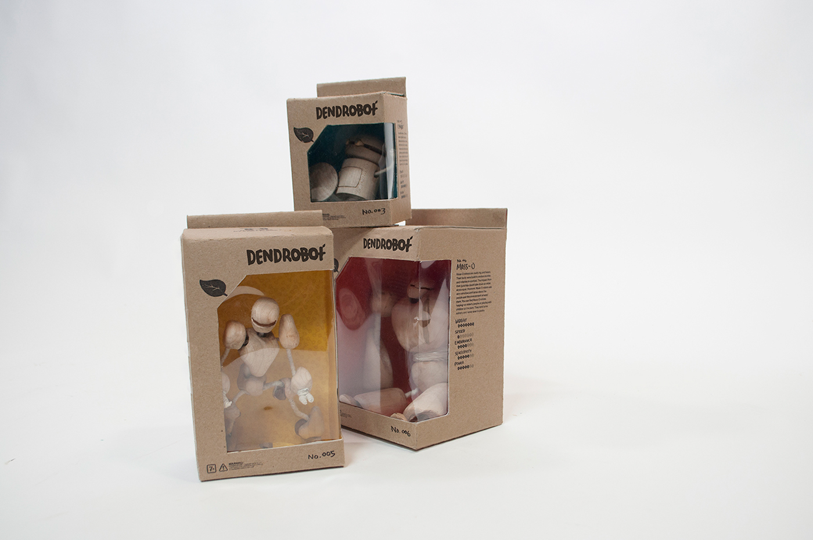
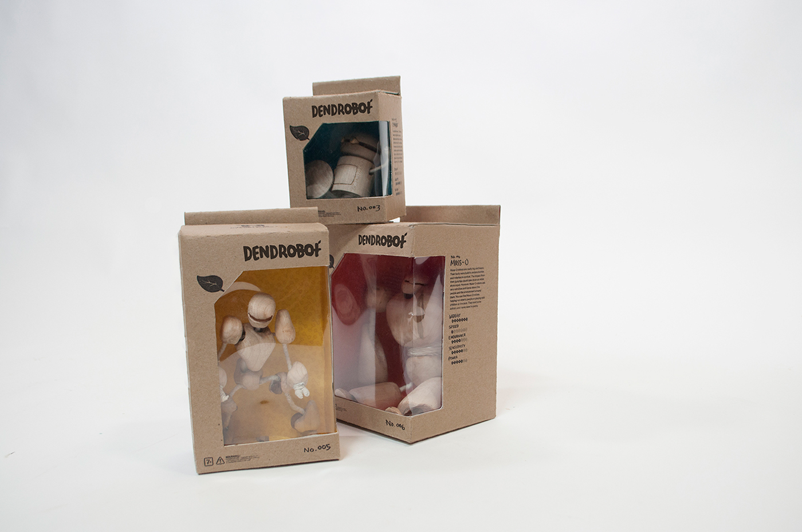

Robots, woodworking, and grief.
Art, Craft, and Design — To Hell With The Trichotomy
My art practice and research focus on technology and grief, specifically the way we grieve through technology and grieving the technology itself. We've learned how to grieve through technology—be it through an online forum, social media, or video games—and we also grieve technology itself. We grieve old virtual spaces that no longer exist, digital files we've lost access to, broken electronics, and 'dead' robots.
One can’t recognize death without acknowledging life. We’re teetering too close to defining a robot's life. How do we tell apart a robot's autonomy and human bias programming? It might sound simple in theory—they're mere machines. Yet time and time again we've found people, including myself, become smitten with the friendly faced robots. This grey area we're in right now is a crucial moment in robotics design, especially social robots, and I want to explore more of it in my own way, through my practice.
 

I study this topic through woodworking and robotic arts. From speculative art to robotic design, you'd find a wide breadth of work from my portfolio.
Some might and have questioned my practice in art spaces. It's too design-y to be art yet too art-sy to be design, too academic to be craft yet not enough to be scientific. A misfit wherever it goes. I've had phases where I'd categorize my own work into 'design' and 'art', but I've realized that it is unnecessary, this is my website and I can do anything I want with it. I find the need to categorize my work irrelevant to what I want to achieve with it. Besides, I think the distinction between the three stems from colonial view of art making. Why is that art pieces made by my people—rich with intricacy, history, and culture—considered only a craft to be sold as souvenir price tagged with low local currency, but a banana taped to the wall 'fine art' sold for a hundred thousand dollars?
However, price tags are far from my goal here. I want to make art that inspires people to learn, to think of things they didn't dare to think of before. I want to challenge the notion that knowledge is set in stone. You think robotics and woodworking are quite a weird combination? Watch me do wackier stuffs.
So, please enjoy my work, whatever it is. I hope you find familiarity, melancholy, joy, and courage to know more about our world and beyond through it.